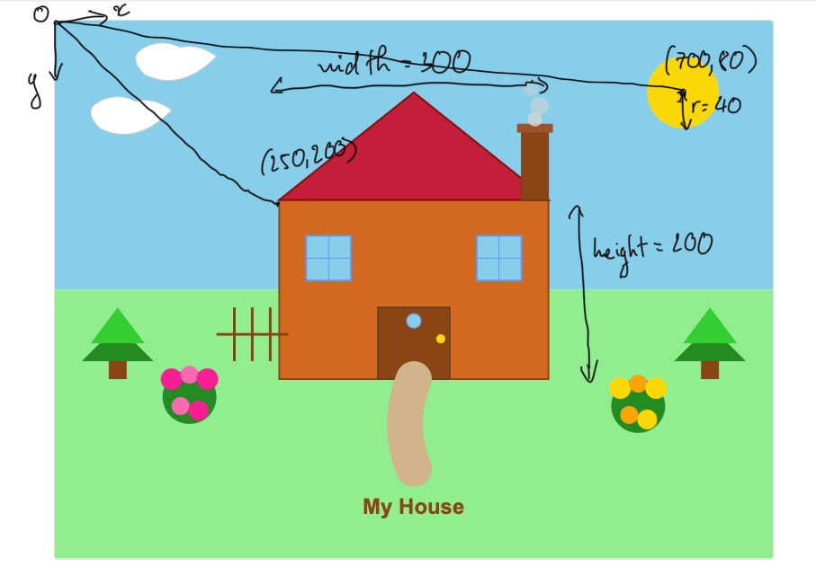

SVG Shapes Used
- Rectangle: House walls, door, windows, chimney
- Circle: Sun, flowers, smoke
- Polygon: Roof (triangle), tree foliage
- Line: Window panes, fence
- Path: Cloud shapes, garden path
- Text: Labels and title
Annotated Screenshots
Coordinate annotation

Example: rect coordinates correspond to house wallsDOM View
Below is a placeholder for the DOM screenshot you capture from your browser's developer tools.